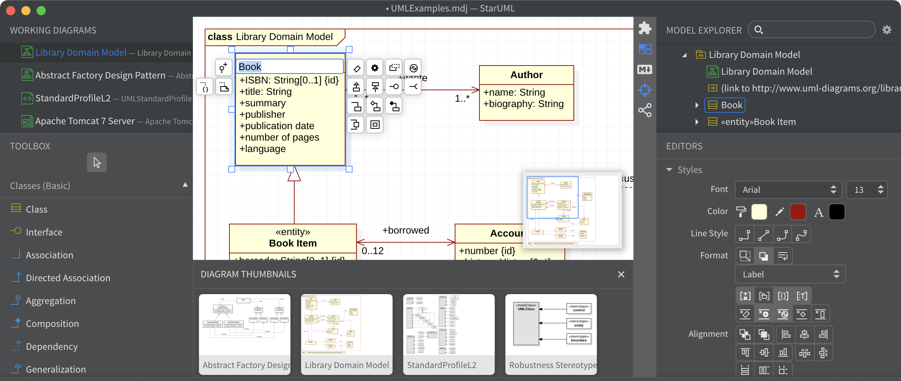
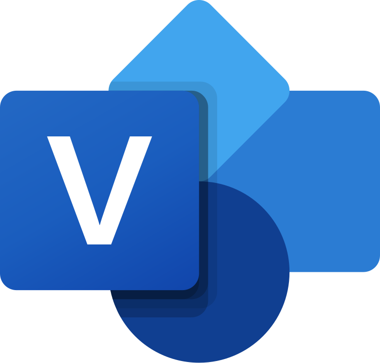

Uppercase
Mis on uppercase vahendid?
Uppercase vahendid on peamiselt keskendunud tarkvaraarenduse elutsükli algfaasidele,
sealhulgas nõuete analüüsile, süsteemi modelleerimisele ja kõrgetasemelisele disainile.
Need aitavad luua süsteeminõuete ja kujunduste visuaalseid esitusi.
Mille jaoks kasutatakse?
Peamiselt on nad kasutusel kasutajanõuete analüüsimisel ja dokumenteerimisel.
Nad on ennekõike mõeldud visualiseerimiseks, erinevate skeemide koostamiseks ja
ka dokumentatsiooni genereerimiseks.
Nad toetavad traditsiooniliste diagrammikeelte kasutamist
(olem-seos diagrammid, andmemudelid, UML-skeemid, jne).
Milliseid uppercase vahendeid olen ise juba kasutanud?
Siin on nimekiri uppercase vahenditest mida olen kasutanud:
- Microsoft Word
- Microsoft Powerpoint
- Microsoft Excel
Kaks näidet uppercase vahendist mida ma veel kasutanud ei ole
-
Vahend - StarUML
Logo:

Programmi akna pilt:

Mida vahendiga teha saab:
StarUML on tarkvaratehnika tööriist süsteemide modelleerimiseks, kasutades ühtset
modelleerimiskeelt (Unified Modeling Language) samuti süsteemide modelleerimiskeelt
(Systems Modeling Language) ja klassikalisi modelleerimismärke.
StarUML kasutab UML diagramme ja kõige sagedamini kasutatakse UML-diagrammi
olemasoleva tarkvara analüüsimiseks, uue tarkvara modelleerimiseks
ning tarkvaraarenduse ja prioriteetide seadmiseks.
-
Vahend - Microsoft Visio
Logo:

Programmi akna pilt:

Mida vahendiga teha saab:
Microsoft Visiot kasutatakse diagrammitüüpide, näiteks vooskeemide, organisatsioonidiagrammide,
korruseplaanide, võrgudiagrammide, UML-diagrammide, mõttekaartide ja muu loomiseks.
Seda kasutatakse tavaliselt ka selliste stsenaariumide jaoks nagu
protsesside kaardistamine ja visuaalne koostöö.
allikad:
DEV Community
EUCIP
Wikipedia
MKLabs Co.
Miro
Vaia
Wikipedia
Edrawsoft